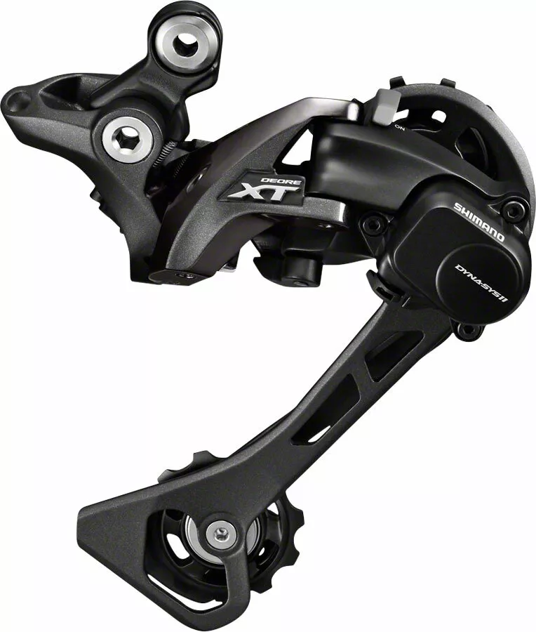

The rear derailleur has two functions: it moves the chain between rear sprockets while taking up chain slack caused by moving to a smaller sprocket at the rear or a smaller chainring by the front derailleur. In order to accomplish this second task, it is positioned in the path of the bottom, slack portion of chain.